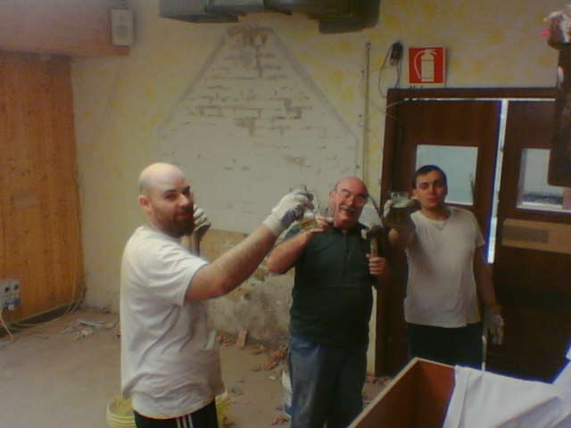
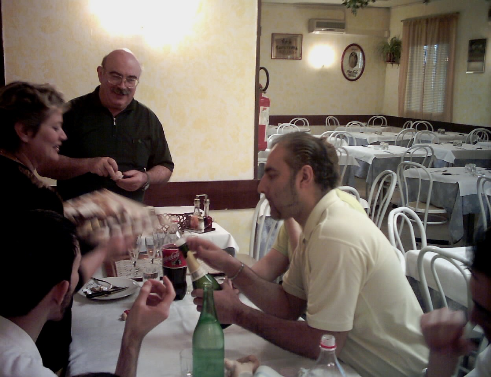

La nostra storia
Il ristorante Nonno Papero nasce nel 1997, dall'unione tra padre e figlio, Gancarlo e Matteo, acccumunati dal desiderio di trasformare una passione in un progetto di vita.
Dopo aver conseguito il diploma presso l'istituto Alberghiro, Matteo ha maturato importanti esperienze lavorative sia all'estero che in diverse realtà italiane, arricchendo il proprio bagaglio professionale e affinando le proprie competenze nel settore della ristorazione. Giancarlo, invece, ha deciso di lasciare il suo ruolo di dirigente nazionale per intraprendere insieme al figlio questa nuova avventura.

I primi lavori di ristrtturazione del locale, prima dell'apertura del ristorante.
Il ristorante è nato dall'ambizione di creare qualcosa di autentico, capace di unire la tradizione della cucina italiana con uno spirito di innovazione, senza mai rinunciare alla qualità, da sempre considerata il valore fondamentale dell'attività.
Nel corso degli anni, Nonno Papero ha continuato a crescere e a migliorarsi, adattandosi alle esigenze della clientela e mantenendo sempre un'attenzione particolare all'accoglienza e alla cura dei dettagli.

Giancarlo con alcuni dipendenti del ristorante, che hanno contribuito al successo dell'attività.
Nei primi anni l'attività era di piccole dimensioni, ma grazie all'impegno della famiglia, dello staff e alla fiducia dei clienti, è cresciuta fino a diventare il ristorante che è oggi: un punto di riferimento per chi desidera vivere un'esperienza gastronomica in un ambiente familiare, accogliente e genuino.